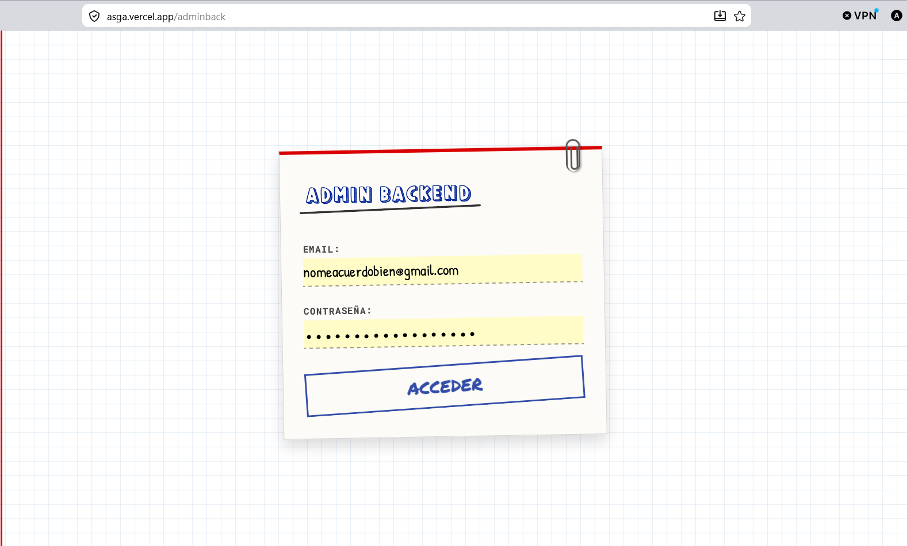

Política de Contraseñas y Doble Factor (MFA)
Implementación y documentación del proceso de securización del portal mediante políticas estrictas de complejidad de credenciales y autenticación multifactor (MFA/TOTP) haciendo uso del backend de Supabase Auth.
1. Política de Complejidad de Credenciales
Para mitigar los ataques de diccionario y de fuerza bruta, se ha establecido una política estricta de robustez de contraseñas a nivel de backend y frontend. Las reglas mínimas exigidas a las credenciales en el registro y cambio de contraseña son:
Requisitos Obligatorios
- Mínimo de 10 caracteres
- Al menos una letra mayúscula (A-Z)
- Al menos una letra minúscula (a-z)
- Al menos un dígito numérico (0-9)
- Al menos un carácter especial (ej. @, $, !, %, *, ?, &)
Restricciones y Buenas Prácticas
- Prohibición de palabras de diccionario comunes.
- Bloqueo de uso de datos personales (email, nombre).
- Supresión de contraseñas previamente filtradas.
- Bloqueo temporal tras 5 intentos fallidos consecutivos.
2. Configuración en la Consola de Supabase
Supabase delega el control de la robustez de contraseñas y la activación de MFA al módulo GoTrue (Supabase Auth). A continuación, se detallan las directivas para configurarlo desde el Panel Web de Supabase:
Paso 1: Forzar Robustez de Contraseña
Accede a tu proyecto en Supabase, ve a Authentication > Provider Settings. En la sección Password Policy, habilita las restricciones de complejidad e indica la longitud mínima (10 caracteres) y el requerimiento de caracteres numéricos y especiales.
Paso 2: Activación de MFA / TOTP
En Authentication > User Actions, asegúrate de que Multi-Factor Authentication (MFA) está configurado como Enabled. Por defecto, Supabase soporta la autenticación basada en tiempo (TOTP) utilizando aplicaciones autenticadoras estándar (Google Authenticator, Authy, Microsoft Authenticator).
Paso 3: Definición de Políticas RLS (Row Level Security)
Para evitar accesos no autorizados a datos confidenciales en caso de credenciales comprometidas (AAL1), configuramos políticas RLS en la base de datos que exijan un nivel de autenticación aal2 (Autenticado con MFA).
-- Política RLS para exigir MFA (AAL2) en la tabla 'datos_seguros'
CREATE POLICY "Solo usuarios autenticados con doble factor pueden leer datos"
ON datos_seguros
FOR SELECT
TO authenticated
USING (
(select auth.jwt() ->> 'aal') = 'aal2'
);3. Integración en el Frontend (Javascript SDK)
El flujo de doble factor consta de dos etapas: Inscripción (Enrollment) y Desafío/Verificación (Challenge/Verify) en cada inicio de sesión subsiguiente.
A Fase de Enrolamiento (MFA Setup)
Llamamos a supabase.auth.mfa.enroll() para inicializar el factor TOTP, obtener el QR code en Base64 y presentar el secreto al usuario para su escaneo.
// 1. Iniciar enrolamiento de MFA
const enrollMFA = async () => {
const { data, error } = await supabase.auth.mfa.enroll({
factorType: 'totp',
issuer: 'MasterCiber Portfolio',
friendlyName: 'Dispositivo Principal'
});
if (error) throw error;
// data.id es el factorId
// data.totp.qr_code es la imagen QR en formato SVG/Base64
// data.totp.secret es la clave en texto para ingreso manual
return data;
};
// 2. Verificar el token inicial para activar el factor
const verifyInitialToken = async (factorId, code) => {
const { data: challengeData, error: challengeError } = await supabase.auth.mfa.challenge({ factorId });
if (challengeError) throw challengeError;
const { data, error } = await supabase.auth.mfa.verify({
factorId,
challengeId: challengeData.id,
code // Código de 6 dígitos introducido por el usuario
});
if (error) throw error;
return data; // MFA activado correctamente
};B Fase de Verificación en Login (Verificar Desafío)
Al iniciar sesión, si el usuario tiene habilitado el MFA, el nivel de aseguramiento (Assurance Level) devuelto por Supabase será aal1. Debemos guiarlo a la pantalla de ingreso del código MFA para elevar su nivel a aal2.
// 1. Comprobar el nivel de autenticación del usuario
const checkAssuranceLevel = async () => {
const { data, error } = await supabase.auth.mfa.getAuthenticatorAssuranceLevel();
if (error) throw error;
// data.currentLevel será 'aal1' si sólo usó contraseña
// data.nextLevel será 'aal2' si tiene MFA configurado
if (data.currentLevel === 'aal1' && data.nextLevel === 'aal2') {
// Redirigir al usuario al formulario de verificación MFA
mostrarPantallaMFA();
}
};
// 2. Retar y validar el token introducido
const completeMFAChallenge = async (code) => {
const { data: factors, error: factorsError } = await supabase.auth.mfa.listFactors();
if (factorsError) throw factorsError;
// Obtenemos el factor TOTP activo
const activeFactor = factors.totp.find(f => f.status === 'verified');
if (!activeFactor) return;
const { data: challenge, error: challengeError } = await supabase.auth.mfa.challenge({
factorId: activeFactor.id
});
if (challengeError) throw challengeError;
const { data, error } = await supabase.auth.mfa.verify({
factorId: activeFactor.id,
challengeId: challenge.id,
code
});
if (error) {
alert("Código incorrecto, por favor intente de nuevo");
throw error;
}
// Exito: Ahora el Assurance Level se eleva a 'aal2'
irAlDashboard();
};4. Simulador Interactivo del Flujo de Hardening
Interactúa con el simulador inferior para comprobar visualmente la lógica de validación de contraseñas robustas y la posterior validación del token TOTP de doble factor.
Paso 1: Credencial del Portfolio
Introduce un correo y crea una contraseña para validar los requisitos de robustez exigidos.
Paso 2: Registro del MFA en tu Dispositivo
Escanea el código QR con Google Authenticator o introduce el secreto.
JBSWY3DPEHPK3PXP
Ingresa el token generado 123456 para simular la verificación.
¡Doble Factor Activado con Éxito!
Tu nivel de aseguramiento de sesión ha escalado a aal2. Supabase ha registrado el dispositivo autenticador. Las peticiones a la base de datos que requieren MFA ahora son autorizadas.
5. Panel de Evidencias del Despliegue
A continuación se presenta el registro visual del login original y el panel backend, seguidos de los bloques destinados a mostrar las configuraciones reales de Supabase y el funcionamiento del token.
Vista de Login del Portfolio
Pantalla de acceso inicial para introducir las credenciales antes de ser reforzada.

Panel Backend del Portfolio
Interfaz interna del administrador protegida tras superar la autenticación.

Evidencia A: Configuración de Robustez de Contraseña en Supabase
Captura de pantalla que demuestre la directiva habilitada en Authentication > Providers forzando longitud y caracteres especiales.
supabase_password_policy.png en assets/img/mfa/
Evidencia B: Desafío de Autenticación de Doble Factor (Vista de Usuario)
Captura de pantalla de la interfaz solicitando al usuario el token TOTP tras verificar que su nivel de aseguramiento de sesión es aal1.
mfa_challenge_screen.png en assets/img/mfa/